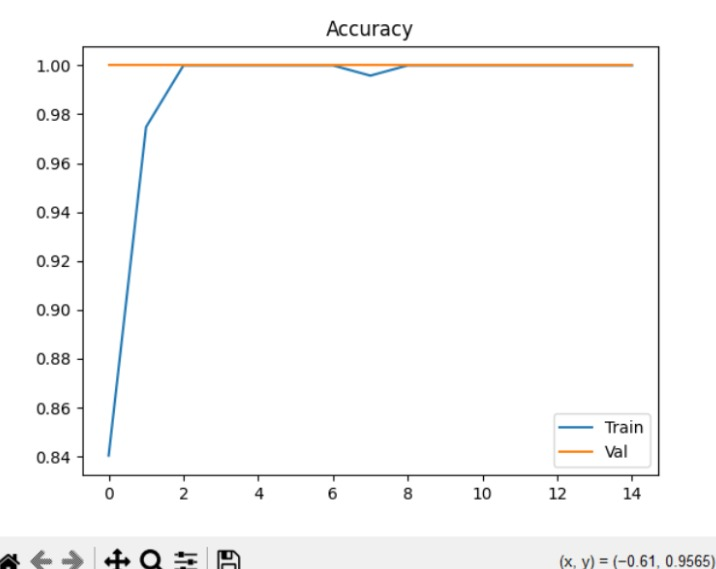

Visión por computadora

Módulo de Inteligencia Artificial
Sistema híbrido de clasificación de plásticos que combina detección de objetos con YOLOv8 y clasificación CNN con TensorFlow, operando en tiempo real sobre Raspberry Pi 4.
📷
Captura
Cámara + OpenCV en tiempo real
→
🔍
Detección
YOLOv8 identifica bounding box
→
✂️
ROI
Región de interés recortada
→
🧠
Clasificación
CNN TensorFlow determina material
→
⚙️
Actuación
ESP32 ajusta parámetros automáticamente
3
Clases de plástico: PET, PP, PS
80/20
Split entrenamiento / validación
15
Épocas de entrenamiento
Arquitectura del modelo
| Componente | Detalle |
|---|---|
| Framework | TensorFlow + Keras |
| Arquitectura CNN | 128 neuronas |
| Optimizador | Adam |
| Función de pérdida | Sparse categorical crossentropy |
| Detector | YOLOv8 (Roboflow) |
| Ponderación | YOLO 30% · TensorFlow 70% |
| Formato guardado | .h5 |
| Interfaz | Tkinter + OpenCV |
Dataset y etiquetado

Demos de detección en tiempo real
🎬
Detección de PS y PP
El modelo híbrido YOLOv8 + TensorFlow identifica en tiempo real fragmentos de PS (poliestireno) y PP (polipropileno), generando el bounding box y clasificando el material con su porcentaje de confianza.
PS
PP
Clasificación en tiempo real · Raspberry Pi 4
🎬
Detección de PET
Demostración de la detección de PET (polietileno tereftalato) reciclado. El sistema identifica el material, lo clasifica y envía automáticamente los parámetros de temperatura correspondientes al ESP32.
PET
Setpoint automático: 260 °C · Zona 2